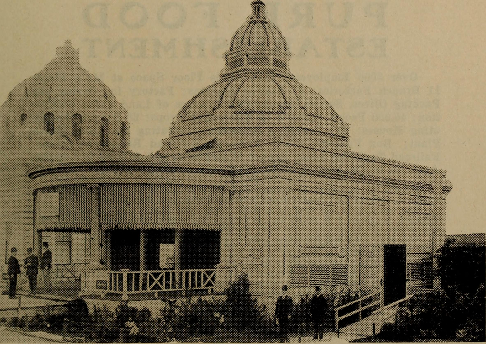
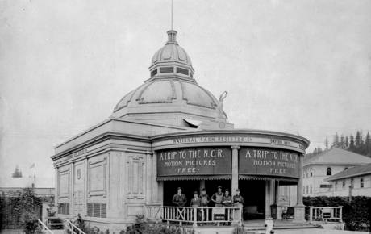

NCR Building
Location in 1905: 45.53770218, -122.70461574
Current Location: 45.58861888, -122.75154099
It was hugely popular because it showed a short film.
Which was the first moving picture that most attendees had ever seen.
Shipped to St. Johns after the exposition closed.
Currently houses the McMenamins St. Johns Theater and Pub.

